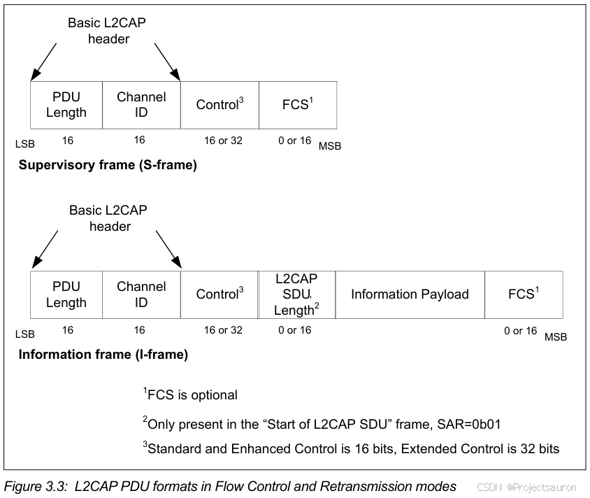

BLE 协议之 L2CAP
[toc]
一、简介
经过 Link Layer 的抽象之后，两个 BLE 设备之间可存在两条逻辑上的数据通道：
- 一条是无连接的广播通道，天高任鸟飞
- 另一条是基于连接的数据通道，是一个点对点（Master to Slave）的逻辑通道。
广播通道暂且不提，这个数据通道（后面简称逻辑通道，Logical Channel），要怎么使用，还需要一番思索，例如：
Logical Channel只有一条，而要利用它传输数据的上层应用却不止一个（例如上图中的 ATT 和 SMP），怎么复用？Logical Channel所能传输的有效 payload 长度最大只有 251bytes，怎是否意味着上层应用每次只能传输少于这个长度的数据？（显然不能！）Logical Channel仅提供了简单的应答和流控机制，如果传输的数据出错怎么办？- ……
L2CAP 所具备的主要功能如下：
- 协议信道复用（Protocol/channel multiplexing） ：能够区分高层协议，在信道建立时，协议复用功能用来 发送请求来连接正确的上层协议 ；在数据传输时，逻辑信道复用必须能够把用同一个协议的不同几个高层实体的区分出来(一对多情况)。
- 分段与重组（Segmentation and reassembly） ：高层协议需传输的数据长度不定，L2CAP 层控制了 PDU 的长度，不仅易于管理而且通过对数据标记分组，允许数据单元的交错，可以满足延时要求，发生错误时的重传也可以更加方便准确。
- 基于 L2CAP Channel 的流控机制（Flow control per L2CAP channel） ：对传输的数据进行流量控制
- 错误控制和重传机制（Error control and retransmissions）
- 协议数据单元（PDUs）的分片（和重组）（Fragmentation and Recombination）：生成符合 Link Layer 传输要求的数据片（长度不超过251）
- 支持流式传输（Support for Streaming）：如音频、视频等，不需要重传或者只需要有限重传
二、L2CAP Protocol 架构
见 Core v5.4 P1016
1、逻辑信道划分
在了解逻辑信道划分前，先了解以下 CID（Channel Identifier）
CID ：逻辑链路通道的端点标识，其分配情况如下：
| CID | 说明 |
|---|---|
| 0x0000 | 无效标识 |
| 0x0001 | 发送信令的信道 |
| 0x0002 | 无连接的接收信道 |
| 0x0003-0x003f | 保留(特定功能) |
| 0x0040-0xffff | 动态分配 |
其中的 $0x0004-0x0005$ 被分配给 BLE（低功耗蓝牙） ：
如果设备支持 BLE 功能， $0x0005$ 作为其信令通道，$0x0004$ 和 $0x0006$ 也会被强制分配给 BLE ，分别作为 ATT 和 SecurityManager 信道。
CID 主要用来区分上层协议，进而保证多协议信道的复用。
2、信道模式
逻辑信道有几种操作模式，最后一种是 LE 设备特有的：
Basic L2CAP Mode（equivalent to L2CAP specification in Bluetooth v1.1) 默认模式，在未选择其他模式的情况下，用此模式。Flow Control Mode流控模式，此模式下不会进行重传，但是丢失的数据能够被检测到，并报告丢失。Retransmission Mode重传模式，此模式确保数据包都能成功的传输给对端设备。Enhanced Retransmission Mode增强重传模式，此模式和重传模式类似，加入了 Poll-bit 等提高恢复效率。Streaming Mode流模式，此模式是为了真实的实时传输，数据包被编号但是不需要 ACK 确认。设定一个超时定时器，一旦定时器超时就将超时数据冲掉。LE Credit Based Flow Control Mode基于 LE 信用的流控模式，被用于 LE 设备通讯。
3、设计思想
使用链路管理器协议在两单元间建立 ACL 链路。基带提供数据分组的有序传输, 但也可能有个别分组损坏或重复。任两台设备之间只会有一条 ACL 链路。
信道建立在链路的基础上，信道可以有多个，链路只有一条。
通过使用基带层提供的机制，L2CAP 提供了一条可靠的信道。当收到请求和重发数据时，基带通常要执行数据完整性校验，直到数据成功确认或发生超时。由于可能会丢失确认报文，所以甚至在数据成功发送后也会发生超时。基带协议使用长度为 1 位的序列号,该序列号用于删除重复发送的分组。由于所有广播的 L2CAP 数据分组的首段都以同一序列位为起始位, 如果需要提供可靠传输,就应禁止使用基带广播分组。
L2CAP 主要对数据进行 封装 ，支持协议复用，统一高层协议数据格式。
4、帧结构
L2CAP 要想实现信道复用与差错控制，必定也要在数据包前加一些前缀信息。
L2CAP 有以下几种连接类型:
- Connection-oriented Channels in Basic L2CAP mode
- Connectionless Data Channel in Basic L2CAP mode
- Connection-oriented Channel in Retransmission/Flow Control/Streaming Mode
- Connection-oriented Channels in LE Credit Based Flow Control Mode
4.1 面向连接信道 B-frame

PDU Length：2 octets (16 bits)，主要指基本 L2CAP 报文头除长度以外的信息净荷的大小，即图中空白部分，其长度可达 65535 字节。Channel ID：2 octets，用于标识分组的目标信道终端。Information payload：0 to 65535 octets， 静荷信息包含来自上层协议(发出的分组)的净荷或者发送到上层协议（接收的分组）的净荷。 MTU 的值在信道配置时确定。所支持的用于信令分组的 MTU 的最小值为 48 字节。
4.2 无连接数据信道包 G-frame

- Protocol/Service Multiplexer (PSM)：2 octets (minimum)，一般为 SDP、RFCOMM、TCS 等中介协议复用。小于 0x1000 的值，0x0001 对应 SDP，0x0003 对应 RFCOMM、0x0005 对应 TCS。主要用于标识何种上层协议。
4.3 重传/流量控制/流传输模式下的面向连接的信道 S-frame、I-frame
I-frame用于在 L2CAP 实体间进行信息传输S-Frame则用于确认I-frame和I-frame的重传请求

Length：2 bytes，除 Basic L2CAP 外的总字节数Channel ID：2 bytes，对端目的信道L2CAP SDU Length：2 bytes，只出现在 Start I-frame(SAR=0x01)中，表示总的 SDU 长度FCS：2 bytes，帧校验序列
Control field 有三种模式：
Standard Control Field：用于重传模式和流量控制模式Enhanced Control Field：用于增强的重传模式和流模式Extended Control Field：用于扩展的重传模式和流模式

Type：I-frame 的类型位为0，S-frame 的类型位为 1。TxSeq：(6/14 bits)，发送序列号，对发送的 I-frame 计数, 用于分段和重组ReqSeq：(6/14 bits)，接收序列号，接收方用于应答 I-frame 和请求重传R：(1 bits)，重传禁用位，用来实现流控制SAR：(2 bits)，分割与重组，指明该 L2CAP 是否是分段过S：(2 bits)，表示 S-Frame 的 TypeP：(1 bits)，置1表示从接收方征求响应F：(1 bits)，当 S-frame 的 P 为 1 时，F 也置 1
4.4 面向连接的通道分为 LE 信用流控模式和增强型信用流控模式 K-frame

5、信道包格式
Core v5.4 P1042
这里介绍的是在对端设备上两个 L2CAP 实体间传递的信号命令(Signaling Commands)，这些信号命令通过 Signaling Channel 来传输
对于 ACL-U 逻辑链路应该使用 CID 0x0001，而对于 LE-U 则应该使用 CID 0x0005
通用的信号包格式如下：

注意：一个 C-Frame 通过 0x0001 信道可以传递多个命令；而一个 C-Frame 通过 0x0005 信道则只能传递一个命令

上图显示了信号命令的通用格式，各字段含义如下
Code：1 byte, 指定 Command 的类别Identifier：1 byte, 用于标识一个 Request 和 Response 匹配对Length：2 byte, Data 字段的长度Data：0~N byte, Code 字段来决定其格式，参照下表：